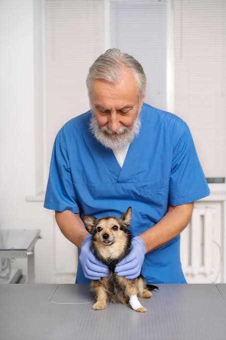

Como tratamos seu pet?
Consultas e Exames: Saúde, Prevenção e Cuidado Preventivo
O cuidado com a saúde do seu pet deve ser constante e preventivo.Na PATAS & PELOS ,
oferecemos um atendimento clínico humanizado, unindo tecnologia, carinho e muita
atenção para garantir o bem-estar e a longevidade do seu melhor amigo.
O nosso processo de atendimento clínico envolve etapas essenciais para cuidar da saúde do pet:
- Avaliação Clínica Completa: Realizamos um atendimento básico detalhado para verificar
a saúde geral, batimentos, temperatura e histórico do animal. - Aplicação de Vacinas: Contamos com suporte para a realização de exames rápidos e
precisos, fundamentais para um diagnóstico precoce e seguro.. - Orientação Preventiva: Ajudamos os tutores com dicas sobre nutrição, parasitas,
comportamento e cuidados diários essenciais para cada fase da vida do pet..
Com uma equipe dedicada e apaixonada por animais, garantimos um ambiente seguro e
tranquilo para que o seu pet seja examinado sem estresse e receba todo o cuidado que merece!
